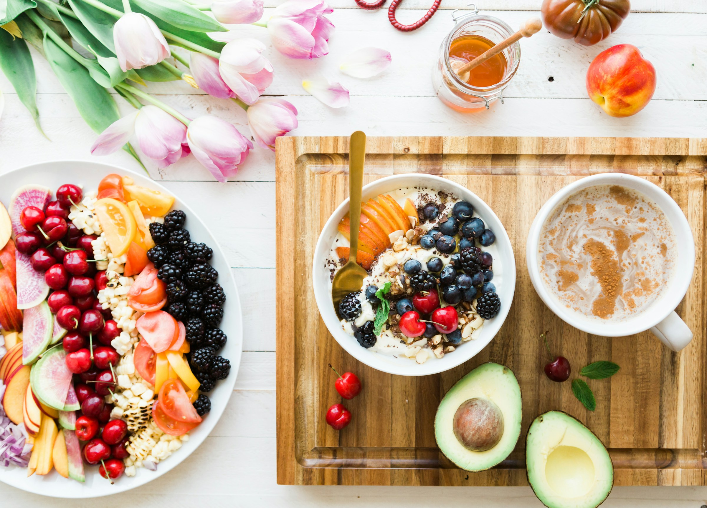

Fruit Salad:
Fruit Salad: A mix of various fruits, sometimes dressed with yogurt or honey. It’s refreshing and rich in natural sugars, fiber, and antioxidants.
Protein Salad:
Protein Salad: Contains a base of greens or grains with added protein sources like chicken, tuna, tofu, or beans. It's filling and ideal for muscle repair and energy replenishment


Pasta Salad:
Pasta Salad: Combines cooked pasta with vegetables, meats, and dressing. It's hearty and versatile, making it a popular choice for picnics or potlucks
Green Salad:
Green Salad: Made with leafy greens like lettuce, spinach, or arugula, often topped with vegetables, nuts, or seeds. It's light, fresh, and packed with vitamins and minerals